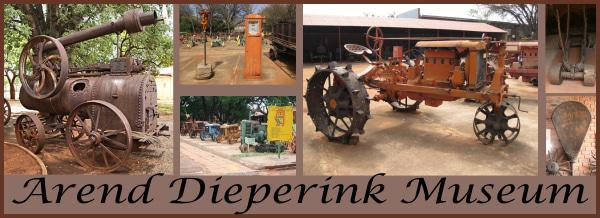

I'd love to go to Cape Town. I wanna climb the table mountain, V&A waterfront, Robben Island, Kirstenbosch national botanical garden, Groot constantia and Cape point.
Take pictures everywhere and have walks or take strolls around the beach! Feel the morning breeze by the beach!
Foreign Language
I want to learn Portuguese because I have a Portuguese friend and his family does not know English too well, I want to be able to communicate with them when I go visit.
English Phrases
Portuguese Phrases
Hello!
Olá
How are you doing?
como você está?
It was a pleasure meeting you!
Foi um grande prazer conhecê-lo!
Historical Places in Limpopo
Debengeni Falls
- Has a magical spot for picnicking
- Swimming in the crystal pool
- Hiking and rare species of birds
Mapungubwe National Park
- Museum Tour
- Heritage Tours
- Game Drives
Arend Dieperink Museum

- It contains cultural and historical artefacts from the Voortrekker and Sotho people.
- It contains a three-million-year-old human predecessor, Australothipicus africanus, found at the nearby Makapan's Cave.
- The display is a replica of a bushveld house, a "Caves through the Ages" exhibition as well as old farm implements and modes of transport.